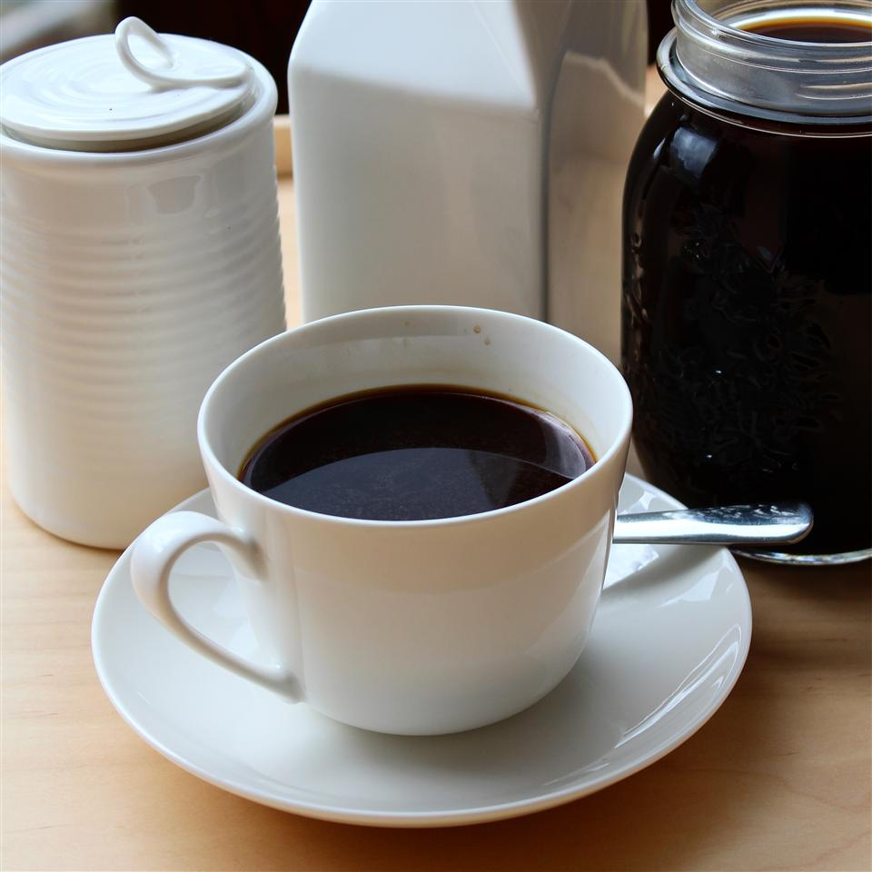

Coffee Recipe

Special Coffee
Special coffee that every one likes drinking as they relax with their loved ones.
Ingredients
- ½ pound coarsely ground coffee beans
- 4 ½ cups cold water
- cheesecloth
- coffee filters
Steps
- Put coffee grounds in a large container. Slowly pour water over the grounds.
- Cover bowl with plastic wrap and steep at room temperature for 18 to 24 hours.
- Line a strainer with several layers of cheesecloth and place atop a pitcher;
strain coffee through the cheesecloth into the pitcher.
- Discard the grounds. To get a clearer brew,
strain coffee again through coffee filters. Store in refrigerator.